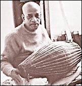

| |
Mrdanga
| The mridanga is a folk drum which originates
from Bengal. This twin-headed drum is also referred to as Khol. It
has a body made of clay and a very small head (approx. 10cm) on the
right side and a larger head (20–30cm) on the left side . This
instrument has been modernised and is now made from fibreglass. Hare
Krishna devotees worldwide use it for their chanting on the streets
and in temples. |
|

|
|